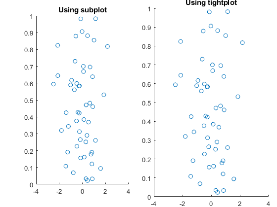

tightplot
Contents
Repo location
This function is contained within this repo: https://gitlab.com/ascario/plotting-tools
Description
This function was developed by Theoden Netoff (U Minn). It takes the same arguments as subplot but additionaly you can control spacing between plots in normalized units
N=51; x=randn(N,1); y=rand(N,1); subplot (1,2,1) scatter(x,y) title('Using subplot') bs=.05;% vertical space ts=.04;% top space ls=.07;% left space rs=.03;% right space bh=.07;% between horizontal space bv=.07;% between vertical space tightplot(1,2,2,'BottomSpace',bs,... 'TopSpace',ts,... 'LeftSpace',ls,... 'RightSpace',rs,... 'BetweenH',bh,... 'BetweenV',bv); scatter(x,y) title('Using tightplot')